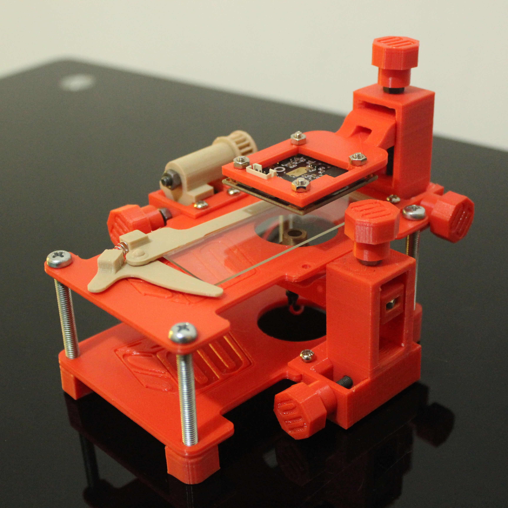

DLHM-Microscope is a cost-effective digital lensless holographic microscope developed by Opto-Digital Processing Group of the Universidad Nacional de Colombia. This platform enables the recording of digital holograms with all the needed degrees of freedom to achieve different fields of view, levels of spatial resolution, and 2D scanning of the sample. This microscope is constructed using 3D printing, fastening elements, a digital camera, and an aspheric lens.
If you need assistance in the assambly or use of DLHM Microscope, please contact us.
More information about this work here.
Assembly
The following video is a supplementary material for the assembly of DLHM-Microscope.
Reconstruction of digitally recorded holograms.
The recorded holograms using the DLHM Microscope require a digital image process to obtain the image. Opto-Digital Processing Group developed an ImageJ plugin for that.
Changes
Version 1.0, 2020/12
- Initial release.
Citation
You can reference DLHM microscope using the following paper:
- Heberley Tobon-Maya, Samuel Zapata-Valencia, Erick Zora-Guzmán, Carlos Buitrago-Duque, and Jorge Garcia-Sucerquia, "Open-source, cost-effective, portable, 3D-printed digital lensless holographic microscope," Appl. Opt. 60, A205-A214 (2021). doi.org/10.1364/AO.405605
Contact
- Samuel Zapata-Valencia (sizapatav@unal.edu.co)
- Heberley Tobon-Maya (htobonm@unal.edu.co)
- Jorge Garcia-Sucerquia (jigarcia@unal.edu.co)